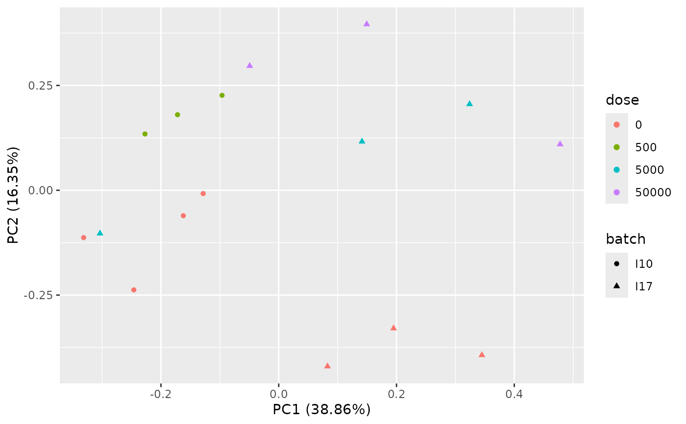

Transcriptomic dose-response to ionizing radiation in zebrafish with batch effect
zebraf.RdA sample of an RNAseq data set of the dose-response to the chronic exposure to ionizing radiation of zebrafish embryo from fertilization and up to 48 hours post-fertilization with the corresponding batch effect of the experiment.
data(zebraf)Format
zebraf contains a list of three objects, zebraf$counts an integer matrix of counts of reads
(1000 rows for a sample pf 1000 transcripts and 16 columns for the 16 sampels), zebraf$dose, a numeric vector coding for the dose of each sample
and zebraf$batch a factor coding for the batch of each sample.
See also
See https://github.com/zhangyuqing/ComBat-seq for indication of use
of the ComBat_seq function of the sva package
for batch effect correction and formatdata4DRomics a function
that can be used to format those data before use of the DRomics workflow.
Source
Murat El Houdigui, S., Adam-Guillermin, C., Loro, G., Arcanjo, C., Frelon, S., Floriani, M., ... & Armant, O. 2019. A systems biology approach reveals neuronal and muscle developmental defects after chronic exposure to ionising radiation in zebrafish. Scientific reports, 9(1), 1-15.
References
Zhang, Y., Parmigiani, G., & Johnson, W. E. (2020). ComBat-seq: batch effect adjustment for RNA-seq count data. NAR genomics and bioinformatics, 2(3), lqaa078.
Examples
# (1) load of data
#
data(zebraf)
str(zebraf)
#> List of 3
#> $ counts: int [1:1000, 1:16] 453 331 897 12 326 533 1948 904 583 154 ...
#> ..- attr(*, "dimnames")=List of 2
#> .. ..$ : chr [1:1000] "ENSDARG00000102141" "ENSDARG00000102123" "ENSDARG00000114503" "ENSDARG00000115971" ...
#> .. ..$ : chr [1:16] "I10_05mG_E5" "I10_05mG_E6" "I10_05mG_E7" "I10_C5" ...
#> $ dose : num [1:16] 500 500 500 0 0 0 0 50000 50000 50000 ...
#> $ batch : Factor w/ 2 levels "I10","I17": 1 1 1 1 1 1 1 2 2 2 ...
# (2) formating of data for use in DRomics
#
data4DRomics <- formatdata4DRomics(signalmatrix = zebraf$counts,
dose = zebraf$dose)
# (3) Normalization and transformation of data followed
# by PCA plot with vizualisation of the batch effect
#
o <- RNAseqdata(data4DRomics, transfo.method = "vst")
#> converting counts to integer mode
#> converting counts to integer mode
#> Warning:
#> To optimize the dose-response modelling, it is recommended to use a
#> dose-response design with at least six different tested doses.
PCAdataplot(o, batch = zebraf$batch)

# \donttest{
PCAdataplot(o, label = TRUE)
 # (4) Batch effect correction using ComBat_seq{sva}
#
if(!requireNamespace("sva", quietly = TRUE)) {
BECcounts <- ComBat_seq(as.matrix(o$raw.counts),
batch = as.factor(zebraf$batch),
group = as.factor(o$dose))
BECdata4DRomics <- formatdata4DRomics(signalmatrix = BECcounts,
dose = o$dose)
(o.BEC <- RNAseqdata(BECdata4DRomics, transfo.method = "vst"))
plot(o.BEC)
PCAdataplot(o.BEC, batch = zebraf$batch)
PCAdataplot(o.BEC, label = TRUE)
}
# }
# (4) Batch effect correction using ComBat_seq{sva}
#
if(!requireNamespace("sva", quietly = TRUE)) {
BECcounts <- ComBat_seq(as.matrix(o$raw.counts),
batch = as.factor(zebraf$batch),
group = as.factor(o$dose))
BECdata4DRomics <- formatdata4DRomics(signalmatrix = BECcounts,
dose = o$dose)
(o.BEC <- RNAseqdata(BECdata4DRomics, transfo.method = "vst"))
plot(o.BEC)
PCAdataplot(o.BEC, batch = zebraf$batch)
PCAdataplot(o.BEC, label = TRUE)
}
# }